Product Designer,
UX Researcher
Brown CS Department
2 weeks (2025)
Figma, HTML
CSS, React
As one of the few kosher restaurants in my hometown of Riverdale, New York, Kai Fan has long been a go-to option for delivery. I chose to redesign Kai Fan's website to address its outdated design, confusing navigation, and poor visual hierarchy, all of which created significant barriers to an enjoyable user experience.
My overarching goal was to build a modern, responsive, and visually appealing interface that prioritizes user needs. By streamlining navigation and ensuring clarity in design, I aimed to help customers seamlessly find essential info—like hours, location, and menu options—while reflecting Kai Fan's brand identity.
Go check it out for yourself! https://www.kaifancuisine.com/
Using five core criteria—Efficiency, Memorability, Learnability, Conceptual Model, and Accessibility—I analyzed how the original Kai Fan website impacts user interactions and where it falls short.
I structured my redesign around four key stages: establishing a style guide, creating wireframes, developing high-fidelity mockups, and implementing the final design.
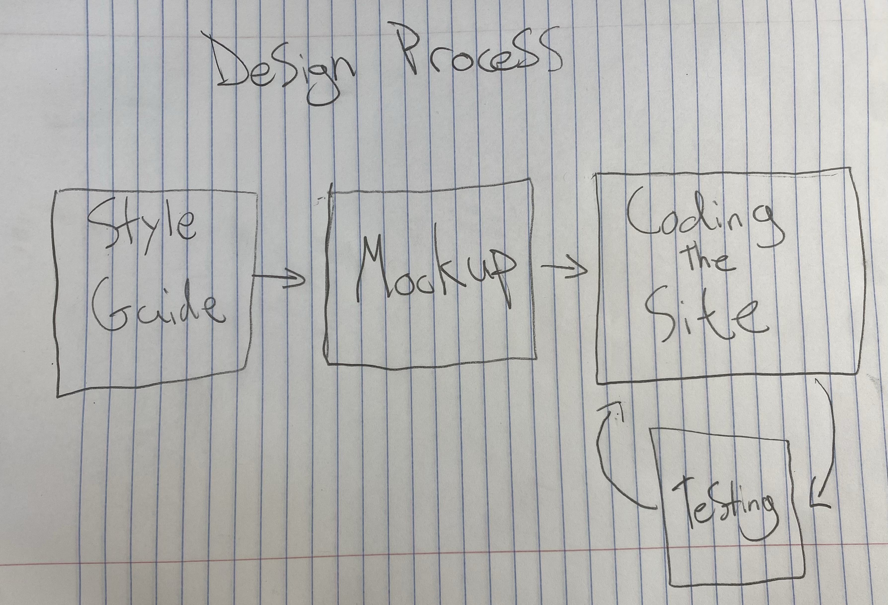
The original website had several usability issues that needed to be addressed. This iterative approach helped ensure that each design decision was validated through user feedback and testing. By the end, I had a cohesive redesign that addressed the major pain points identified during the initial analysis.
A cohesive visual language was essential for transforming Kai Fan's digital presence. The style guide below establishes the foundation for a consistent, accessible, and engaging user experience.
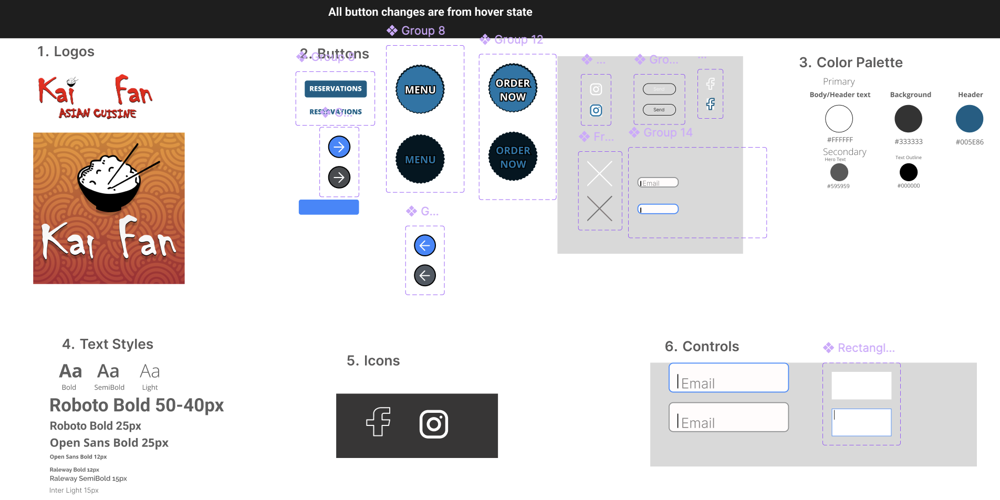
I produced high-fidelity mockups for mobile, tablet, and desktop views, ensuring a seamless experience across all devices. Each design variation maintains consistent elements while optimizing layouts for different screen sizes.

The following images showcase additional views of the redesigned site across different devices and states.
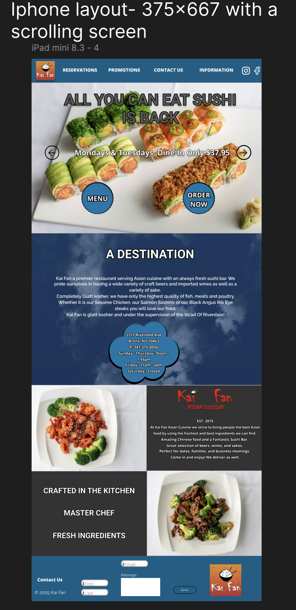
iPhone layout: Optimized for one-handed navigation
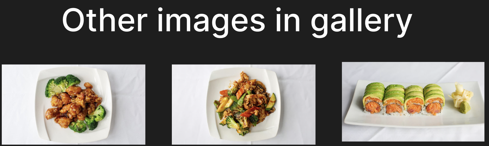
Gallery View: Showcasing food imagery in an engaging grid layout
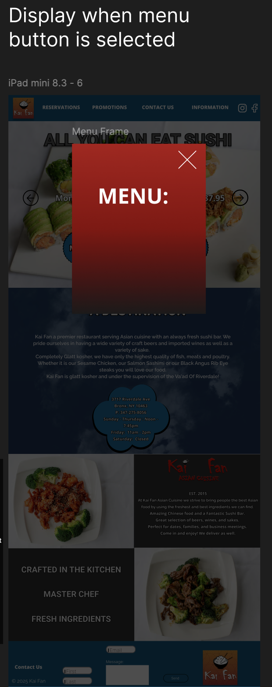
Menu Modal: Easy-to-read format with clear categorization
The end result is a modern, welcoming, and intuitive website that transforms Kai Fan's digital presence. By integrating consistent design elements and prioritizing accessible, user-centric features, the redesigned site invites users to explore the menu, check operating hours, and place orders effortlessly.
Go check it out for yourself! https://egeller1.github.io/kaifan/
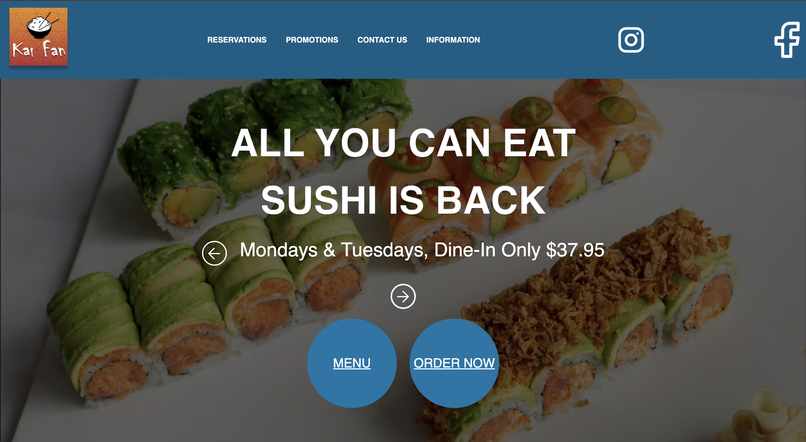
Main page with hero image
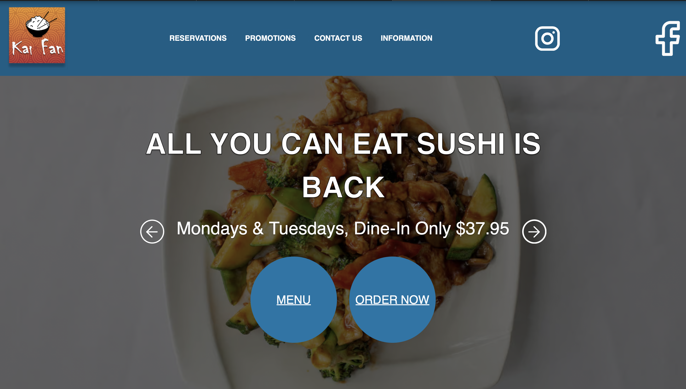
Alternative gallery view
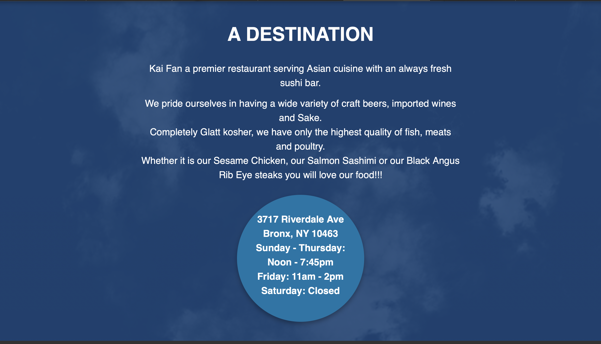
The "A Destination" section
The site is fully accessible across different languages, font sizes, and screen types, ensuring an inclusive experience for all users.
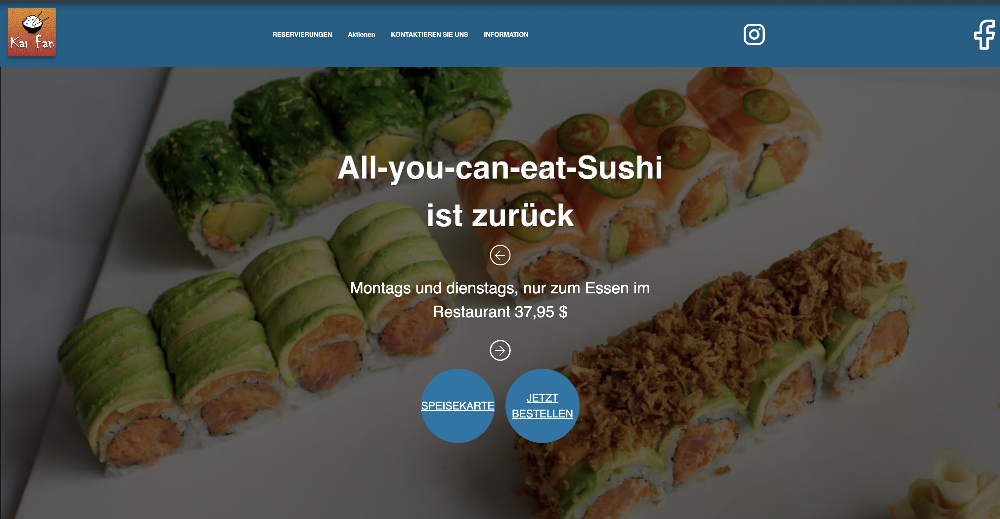
Multilingual support
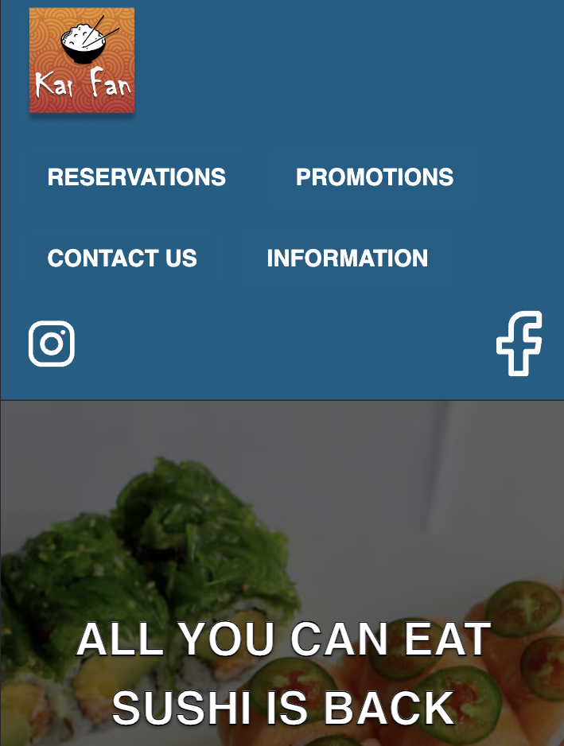
Responsive mobile layout
Every component serves a clear purpose with intuitive interactions and smooth transitions.
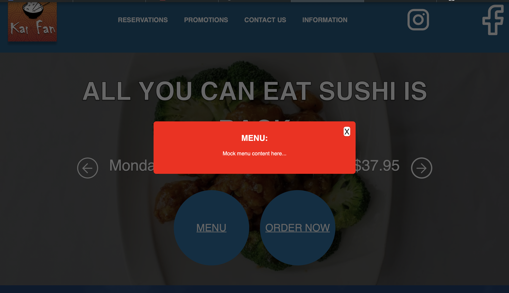
Menu modal interface
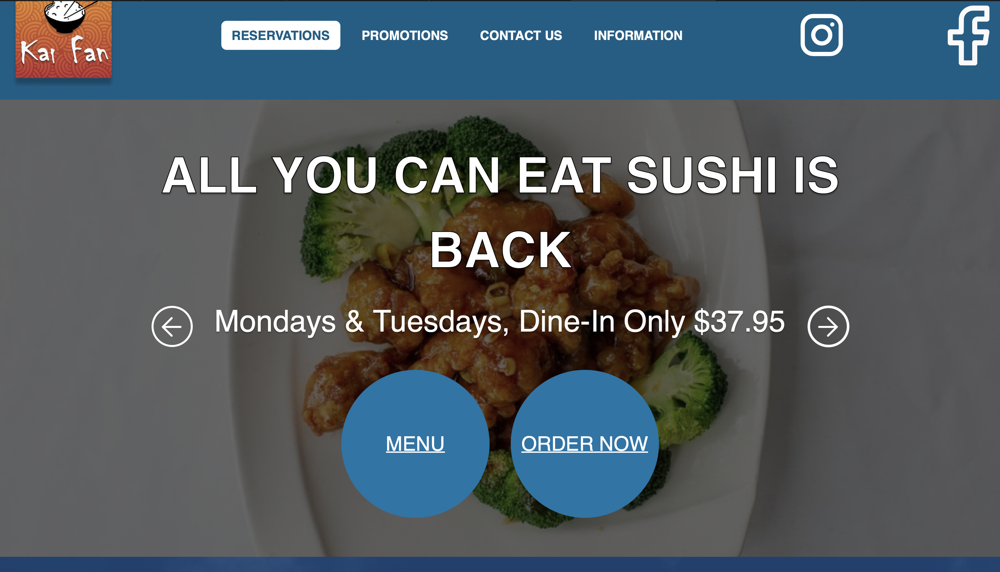
Interactive navigation
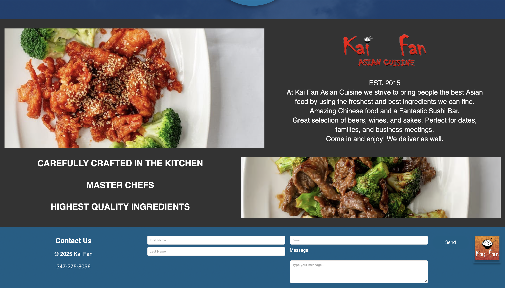
Contact form and footer
I implemented improvements to address the key issues identified in our analysis:
These enhancements transformed the site into a user-friendly and effective digital experience.
This project was a fun exercise that taught me several critical lessons:
This was my first site redesign and I enjoyed looking at a site, assessing its strengths and weaknesses, and then fixing it myself!